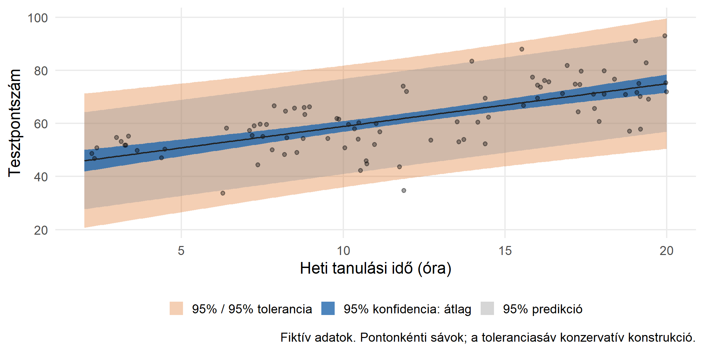
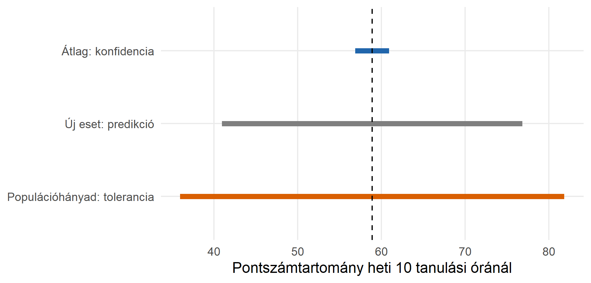

Kiegészítő diasor · BA szociológia
Példa: tanulási idő és tesztpontszám kapcsolata.
| Kérdés | Eszköz |
|---|---|
| Mekkora a populációs átlagpontszám heti 10 tanulási óránál? | A feltételes átlag konfidenciaintervalluma |
| Milyen pontszámot kap egy új hallgató heti 10 tanulási óránál? | Predikciós intervallum |
| Mely tartomány tartalmazza a heti 10 órát tanulók legalább 95%-ának pontszámát, 95%-os megbízhatósággal? | Toleranciaintervallum |
A toleranciaintervallum nem a multikollinearitásnál használt toleranciamutató (\(1/VIF\)).
A toleranciaintervallumhoz két külön értéket választunk:
A „95% / 95% toleranciaintervallum” ebben a diasorban azt jelenti:
Olyan eljárást használunk, amely a megadott feltételek mellett az ismételt minták legalább 95%-ában olyan intervallumot ad, amely a releváns populáció legalább 95%-át lefedi.
Nem azt jelenti, hogy az intervallumba biztosan a megfigyelt minta 95%-a kerül.
Adott, előre kijelölt \(x_0\) mellett az \(Y\mid X=x_0\) feltételes eloszlást vizsgáljuk.
Legyen \(L(x_0)\) és \(U(x_0)\) a mintából számított két határ. A cél:
\[\Pr_{\text{mintavétel}}\!\left[ \Pr\{L(x_0)\le Y\le U(x_0)\mid X=x_0\}\ge P \right]\ge 1-\alpha.\]
A belső valószínűség a populációs lefedettség; a külső a mintavételi megbízhatóság.
BA-szintű cél: értelmezze a két szintet; a képletet nem szükséges memorizálnia.
A két eljárás nem felcserélhető. A százalékok és az alkalmazott módszer megadása nélkül az intervallumok szélessége sem hasonlítható össze általánosan.

Az ábrán a toleranciasáv szélesebb. Ez az itt választott szintekre és konstrukcióra vonatkozik.

Ugyanaz a becsült átlag, de három eltérő kérdés és három eltérő intervallum.
Egyoldali változat: például felső határ, amely alatt a várakozási idők legalább 90%-a található, 95%-os megbízhatósággal.
A statisztikai toleranciahatár nem előírt szakpolitikai küszöb és nem automatikusan „elfogadható” értékhatár.
A bemutatott normális lineáris modellben feltesszük:
A populációs szélek becslése érzékeny lehet a ferdeségre, nehéz eloszlásszélekre és kiugró esetekre.
Nem a nyers \(X\) vagy \(Y\) normalitása a feltétel. Más modellhez más toleranciaintervallum-eljárás szükséges; a robusztus standard hiba önmagában nem elegendő.
A diasorban minden egyes előre rögzített prediktorértéknél külön értjük a megbízhatóságot.
A szimultán eljárások részletes tárgyalása meghaladja a BA-szintű minimumot.
Normális modellben, rögzített \(x_0\) mellett növekvő információnál a kétoldali központi \(P\)-hányad szélessége \(2z_{(1+P)/2}\sigma\) felé tart, nem nulla felé.
Egy fiktív elemzés a heti 10 órát tanulókra 95% / 95% toleranciaintervallumot közöl: [40; 75] pont.
Melyik állítás helyes?
A. A csoport átlagpontszáma 95%-os megbízhatósággal 40 és 75 közé esik; ez az intervallum elsődleges jelentése.
B. A megfigyelt minta pontosan 95%-a 40–75 pontot kapott.
C. Az eljárás 95%-os megbízhatósággal a feltételes populáció legalább 95%-át lefedő tartományt ad.
Helyes: C. A feltételek és a célpopuláció megnevezése az értelmezés része.
Konzervatív, normális modellen alapuló konstrukciót alkalmaztunk. Adott \(x_0\) mellett:
\[h_0=\frac1n+\frac{(x_0-\bar x)^2}{\sum_i(x_i-\bar x)^2},\qquad \nu=n-2.\]
Legyen
\[a=t_{1-\alpha/4,\nu}s\sqrt{h_0},\qquad \sigma_U=s\sqrt{\frac{\nu}{\chi^2_{\alpha/2,\nu}}}.\]
Ekkor a használt intervallum:
\[\widehat y_0\ \pm\left[a+z_{(1+P)/2}\sigma_U\right].\]
Ez nem optimális szélességű és nem egy általános egzakt toleranciafaktor-képlet.
side=2: kétoldali határok.alpha=0.05: 95%-os megbízhatóság.P=0.95: legalább 95%-os populációs lefedettség.Ez a nem futtatott kód dedikált eljárást mutat; az ábrák a külön dokumentált konzervatív konstrukcióval készülnek. A különböző eljárások nem feltétlenül adnak azonos számokat.
A predict.lm() dokumentációja a prediction intervallum mellett zárójelben a „tolerance” kifejezést is használja.
A predict(..., interval="prediction", level=.95) azonban nem valósítja meg a jelen diasorban tárgyalt, két százalékkal megadott 95% / 95% populációs toleranciagaranciát.
Mindig azt ellenőrizze, hogy az eljárás mit fed le, milyen valószínűségi értelemben, és megadható-e külön a populációhányad és a megbízhatóság.
Források:
Az ábrák szimulált adatokat használnak. A kézi toleranciafaktor-számítás nem javasolt BA-szintű számonkérési követelmény.